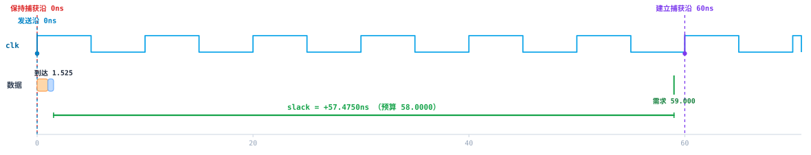
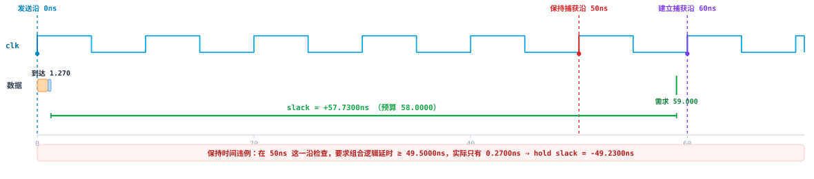

商业 STA 工具闭源且庞大。想搞明白"为什么写了 set_multicycle_path -setup 6 就必须补一条 -hold 5"，通常只能翻厂商手册。
pysta 把有意思的部分用大约两千行可读的 Python 重写了一遍：你可以单步调试、打印中间值、也可以故意改坏它看会怎样。
里面的每个数字都能手算对上，因为时间量一律用 fractions.Fraction 存储 —— 不是 float。所以 1.0/75*1000 精确等于 40/3，而 40/3 * 3 精确等于 40。
同样一条多周期路径，只差一个 -hold 5。

ex9）：-setup 6 -hold 5时，建立沿落在 60 ns 处，保持沿被拉回 0 ns。左边通过 +57.475 ns，右边通过 +1.025 ns。
ex9b）：只写 -setup 6，不写 -hold 5。pysta 想暴露的那类 bug。
不用装任何东西，标准库就够了。
git clone https://github.com/harryzhang8/pysta
cd pysta
python -m pysta list # 列出所有示例
python -m pysta check # 跑全部示例并核对 32 条期望值
python -m pysta report ex9 # 打印 report_timing 风格报告
python -m pysta run # 输出报告 + 交互式波形 HTML 到 ./out/pysta check 就是 CI 跑的东西：任何一条对不上就返回非零。
from pysta import Design, analyze
from pysta.paths import DEFAULT_LIB, NETLIST_DIR, SDC_DIR
design = Design.build(DEFAULT_LIB,
NETLIST_DIR / "ex1_reg2reg.v",
SDC_DIR / "ex1_reg2reg.sdc")
result = analyze(design)
for pt in result.worst_setup(3):
print(f"{pt.path.startpoint} -> {pt.path.endpoint}")
print(f" arrival = {float(pt.arr):.4f} ns")
print(f" required = {float(pt.req_setup):.4f} ns")
print(f" slack = {float(pt.slack_setup):+.4f} ns ({pt.verdict})").lib通用 group/attribute 语法解析器；NLDM 一维/二维查找表，双线性插值 + 线性外推；cell / pin / ff 组；建立保持约束和 clock-to-Q 弧。
模块端口、总线展开（input [7:0] A; → A[7]..A[0]）、数组实例名（FF3[0]）、具名与位置连接、assign 网络别名。行为级 RTL 会明确报错。
create_clock（含虚拟时钟与自定义波形）、不确定度、转换时间、latency、set_input_delay / set_output_delay / set_max_delay / set_false_path / set_clock_groups / set_multicycle_path，以及 Tcl expr 求值器。
建时序图、穿过缓冲器传播时钟树、枚举所有起终点之间的路径，在所有时钟的公共基周期上取最差建立/保持。
设发送沿为 t_L，i0 是严格晚于 t_L 的第一个捕获时钟上升沿下标：
建立捕获沿下标 = i0 + (M_setup - 1)
保持捕获沿下标 = 建立捕获沿下标 - 1 - M_holdM_setup 默认 1、M_hold 默认 0，所以建立检查在下一个沿、保持检查在和发送沿同一个沿 —— 这就是"保持比建立提前一个沿"的实际含义。10 ns 时钟上写 -setup 6 会把保持沿一起拖到 50 ns，补上 -hold 5 才拉回 6-1-5=0。
多时钟时引擎会遍历 LCM(T1, T2, ...) 内的每一个发送沿并取最差 slack。所以"两个周期直接相减"会算错：LCM(30,20)=60，最差的一组是 30 → 40；LCM(20,40/3,10)=40，最差一组是 20 → 80/3。
expr 刻意保留 Tcl 语义：1/75 是整数除法得 0，1.0/75 才是浮点。这是 SDC 里经典的静默 bug，所以求值器会跟踪一个值是不是整数并按需截断。
-add_delay 语义不加 -add_delay 时，后一条 set_output_delay 替换前一条。解析器实现该规则并给出告警，分析器则对每一条存留约束分别求值取最差 —— ex6 里起作用的是 clkc 的 2.5 ns，而不是 clkd 的 4.5 ns。
Tco 和普通组合弧走同一张 NLDM 表，所以会随扇出增大。ex10 里 FF1/Q 驱动两个负载，Tco 从 1.0 ns 涨到 1.1 ns，两周期预算因此是 17.9 ns 而不是想当然的 18.0 ns。
pysta 是教学引擎，不能替代 PrimeTime / OpenSTA。
| pysta | 生产级 STA | |
|---|---|---|
| 延时模型 | 单元表 + 线负载模型（默认理想线） | + 寄生参数提取（SPEF） |
| 时钟树 | 用 SDC 里的 latency 数字，不真实传播 | 按实际时钟树传播 |
| 路径搜索 | 穷举简单路径 | 时序图最差路径算法 |
| 时序弧 | 以 max / 建立为主，保持只算寄存器终点 | 完整 max/min，上升下降分别建模 |
| 优化 | 只报不改 | 改尺寸、插缓冲器、重定时 |
| 串扰 / SI | 不建模 | 完整 SI 分析 |